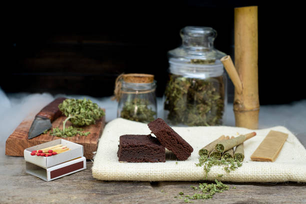

Interviews with athletes and fitness enthusiasts who use cannabis as part of their regimen
Posted by on 2024-05-31
As society's views on cannabis continue to evolve, more and more athletes and fitness enthusiasts are turning to this natural plant as part of their wellness regimen. Through a series of interviews with individuals who incorporate cannabis into their daily routine, we gain insight into the benefits and challenges of using this controversial substance in the world of sports and fitness.
One common theme that emerges from these interviews is the role that cannabis plays in recovery. Many athletes report using cannabis products such as CBD oils or topicals to help alleviate soreness and inflammation after intense workouts or competitions. By reducing pain and speeding up the healing process, these individuals are able to bounce back quicker and continue pushing themselves to new limits.
But it's not just physical recovery that cannabis aids in – mental health is also a major factor for many of these athletes. Several interviewees mention using cannabis to help manage stress, anxiety, and even depression. By calming their minds and promoting relaxation, they are better able to focus on their training goals and perform at their best when it matters most.
Of course, there are still plenty of misconceptions surrounding cannabis use in the athletic community. Some athletes express concern about how using cannabis may impact their performance or lead to potential drug testing issues. However, as more research is conducted on the effects of cannabinoids on the body, many are starting to see that cannabis can be a valuable tool for enhancing overall wellness without compromising safety or integrity.
Ultimately, these interviews shed light on a growing trend within the athletic world – one that embraces alternative forms of medicine and prioritizes holistic health practices. As attitudes towards cannabis continue to shift, it will be interesting to see how more athletes and fitness enthusiasts incorporate this plant into their routines in order to achieve peak performance both on and off the field.